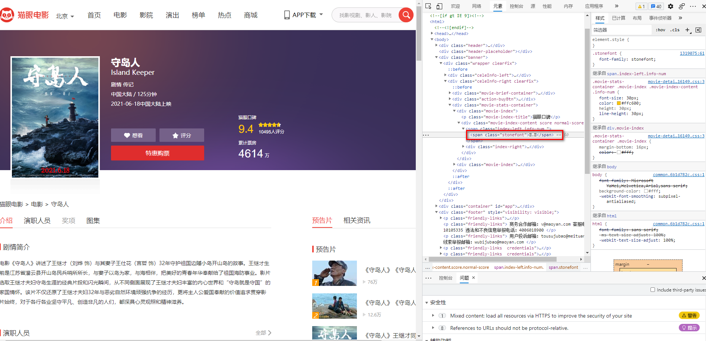

常见的反爬手段和解决思路
本文最后更新于：2021年9月9日 早上
服务器反爬的原因
爬虫占总
PV（PV指页面的访问次数）的比例高，浪费资源。公司可免费查询资源被批量抓走，丧失竞争力。
状告爬虫成功的机率小
服务器常反什么样的爬虫
十分低级的应届生
十分低级的创业小公司
不小心写错了没人去停止的失控小爬虫
成型的商业对手
抽风的搜索引擎
反爬领域常见的一些概念
爬虫：使用任何技术手段，批量获取网站信息的一种方式，关键在于批量
反爬虫：使用任何技术手段，阻止别人批量获取自己网站信息的一种方式。关键也是批量。
误伤：在反爬虫的过程中，错误的将普通用户识别为爬虫。
拦截：成功地阻止爬虫访问。
资源：机器成本和人力成本的总和。
反爬的三个方向
基于身份识别进行反爬
基于爬虫行为进行反爬
基于数据加密进行反爬
常见基于身份识别进行反爬
通过headers字段来反爬
- 通过
headers字段中的user-agent进行反爬
- 反爬原理：默认的爬虫没有
user-agent - 解决办法：请求之前添加
user-agent即可；最好是使用user-agent池来解决
- 通过
refer字段或其他字段来反爬
- 反爬原理：爬虫默认情况下是不会携带
refer字段的，服务器通过判断请求发起的源头，以此判断请求是否合法 - 解决方法：添加
refer字段
- 通过
cookie来反爬
- 反爬原因：通过检查
cookie来查看发起请求的用户是否具备相应权限 - 解决方案：进行模拟登录，成功获取
cookies之后进行数据爬取
通过请求参数来反爬
- 通过
html静态文件中获取请求数据（GitHub登录数据）
- 反爬原理：通过增加获取请求参数的难度进行反爬
- 解决方案：仔细分析抓包得到的每一个包，搞清楚请求之间的联系
- 通过发送请求获取请求数据
- 反爬原因：通过增加获取请求参数的难度进行反爬
- 解决方案：仔细分析抓包得到的每一个包，搞清楚请求之间的联系，搞清楚请求参数的来源
- 通过
js生成请求参数
- 反爬原理：
js生成请求参数 - 解决方法：分析
js,观察加密的实现过程，通过js2py获取js的执行结果，或者使用selenium实现
- 通过验证码来反爬
- 反爬原理：对方服务器通过弹出验证码强制用户浏览行为
- 解决方法：打码平台或者是机器学习的方法识别验证码，其中打码平台廉价易用，更值得推荐
常见基于爬虫行为进行反爬
基于请求频率或总请求数量
- 通过请求
Ip/账号单位时间内总请求的数量进行反爬
- 反爬原理：正常浏览器请求网站速度不会太快，同一个
ip或者账号大量请求了对方服务器有更大的可能性会被识别为爬虫。 - 解决方法：对应的通过购买高质量的
ip的方式能够解决这个问题，或者购买多个账号。
- 通过同一
ip或者账号请求之间的间隔进行反爬
- 反爬原理：正常人操作浏览器浏览网站请求之间的时间间隔是随机的，而爬虫前后两个请求之间时间间隔通常比较固定同时间隔时间比较短，因此可以用来做反爬。
- 解决方法：请求之间进行随机等待，模拟真实用户操作。在添加时间间隔之后，为了能够高速获取数据尽量使用代理池，如果是账号，则将账号请求之间设置随机休眠。
- 通过对请求
ip或者账号每天请求次数设置阀值进行反pa。
- 反爬原理：正常的浏览行为，其一天的请求次数是有限的，通常超过某一个值，服务器就会拒绝响应。
- 解决方法：硬的，通过购买高质量的
ip的方法，或者购买多个账号。同时设置请求间的随机休眠。
根据爬虫行为进行反爬，通常在爬虫步骤上分析
- 通过
js实现跳转来反爬
- 反爬原理：
js实现页面跳转，无法在源码中获取下一页url。 - 解决方法：多次抓包获取条状
url，分析规律。
- 通过陷阱获取爬虫
IP，进行反爬
- 反爬原理：在爬虫获取链接的请求中，爬虫会根据正则表达式，
xpath，css等方式进行后续链接的提取，此时服务器端可以设置一个陷阱URL，会被提取规则获取，但是正常用户无法获取，这样能有效区分爬虫和正常用户。 - 解决方法：完成爬虫的编写后，使用代理批量爬取测试/仔细分析响应内容结构，找出页面中存在的陷阱。
- 通过假数据反爬
- 反爬原理：向返回的响应中添加假数据和污染数据库，通常假数据不会被正常用户看到。
- 解决方法：长期运行，核对数据库同实际页面中数据对应情况，如果存在问题仔细分析响应内容。
- 阻塞任务队列
- 反爬原理：通过生成大量的垃圾URL，从而阻塞任务队列，降低爬虫的实际工作效率
- 解决方法：观察运行过程中请求响应状态仔细分析源码获取垃圾URL生成规则，对URL进行过滤
- 阻塞网络I/O
- 反爬原理：发送请求获取响应的过程实际上就是下载的过程，在任务队列中混入一个大文件的URL，当爬虫在进行请求时将会占用网络IO，如果是多线程会占用线程
- 解决方法：观察运行过程中请求响应状态/多线程对请求线程计时/发送请求线
- 运维平台审计
- 反爬原理：通过运维平台进行综合管理，通常采用复合型反爬虫策略，多种手段同时使用
- 解决方案：仔细观察分析，长期运行测试目标网站，检查数据采集速度，多方面处理
基于数据加密进行反爬
- 对响应中含有的数据进行特殊化处理
通常的特殊化处理主要就是css数据偏移/自定义字体/数据加密/数据图片/特殊编码格式等。
- 通过自定义字体来反爬
- 反爬思路：使用自有字体文件
- 解决思路：切换到手机版/解析字体文件进行翻译
比如猫眼电影 电脑版：

- 通过
css来反爬- 反爬思路：使用自有字体文件
- 解决思路：切换到手机版/解析字体文件进行翻译
比如去哪儿网 电脑版：

反爬思路：源数据不为正真数据，需要通过
css位移才能产生真正数据解决思路：计算
css的偏移通过
js动态生成数据进行反爬- 反爬原理：通过
js动态生成 - 解决思路：解析关键
js，获得数据生成流程，模拟生成数据
- 反爬原理：通过
通过数据化图片进行反爬
- 58同城短租
- 解决思路：通过使用图片解析引擎从图片中解析数据
通过编码格式进行反爬
- 反爬原理：不适用默认编码格式，在获取响应之后通常爬虫使用
utf-8格式进行解码，此时解码结果将会是乱码或者报错 - 反爬原理：根据源码进行多格式解析
- 反爬原理：不适用默认编码格式，在获取响应之后通常爬虫使用
本博客所有文章除特别声明外，均采用 CC BY-SA 4.0 协议 ，转载请注明出处！